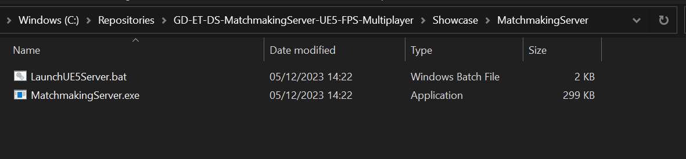
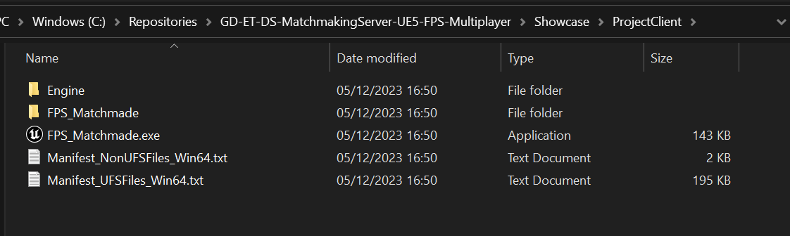

1. Place Your Matchmaking Server Executable Into The MatchmakingServer Folder
(/Showcase/MatchmakingServer/MatchmakingServer.exe)

2. Place Your Client Build Executable Into ProjectClient
(/Showcase/ProjectClient/[ProjectName].exe)

3. Place Your UE5 Server Build Executable Into ProjectServer
(/Showcase/ProjectServer/Win64.exe)
(Similar Structure To Previous Image)
4. Configure Each Batch File To Ensure It's Pointing To Your Executable And Add/Tweak Parameters As Required For Each Application
5. Run LaunchClient1.bat and LaunchClient2.bat As well As LaunchMatchmakingServer.bat
6. Connect The Players To The Server And Play!
Please Leave All The Batch Files Where They Are, Especially The LaunchUE5Server.bat Or Fix Up Their Paths To Compensate